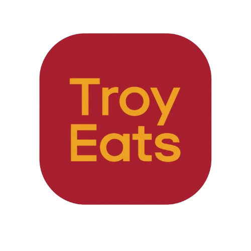
usc dining · practice of design · 2026a ground-up redesign of how 20,000 students eat on campus — one app instead of three, built around your schedule and your wallet.
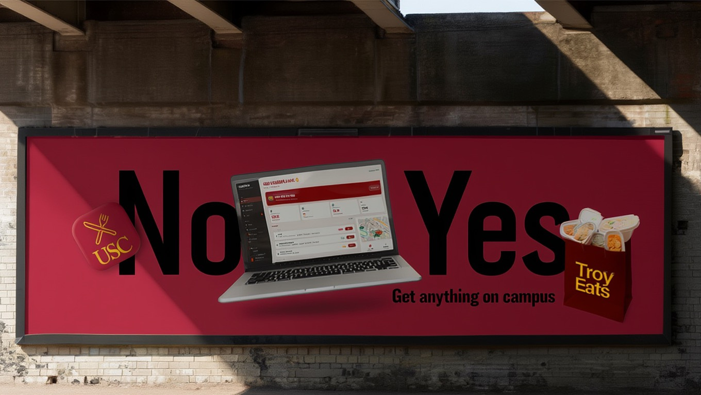
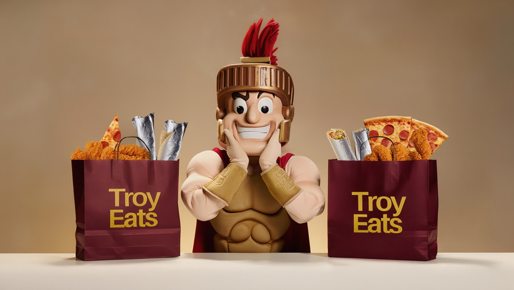
the pitch, in motion
get anything on campus.
troy eats — promo reel from the final pitch
the problem
eating on campus took three apps and a lot of guessing.
USC dining was scattered across USC Card Services, a separate mobile-ordering app, and static dining-hall menu pages — none of which talked to each other.
The result was constant decision fatigue: redundant screens (a rewards tab that did nothing), no photos, no sense of community, and no single answer to the only question students actually ask — "where should i eat right now?"
- 01fragmented tools. card balance, ordering, and menus lived in three different places.
- 02decision fatigue. too many redundant pages and buttons, no guidance.
- 03no community. no reviews, no photos, no connection between students and chefs.
- 04blind wait times. you found out a station was slammed only once you got there.
research
we started where the frustration was — our own.
We interviewed the people who actually live in these apps: USC students, our own friends, and ran an Instagram-stories questionnaire to widen the sample. We also catalogued every pain point we hit ourselves, mapping the redundant flows on a wall.
One pattern kept surfacing: people didn't want more features — they wanted the existing ones to make a decision for them.
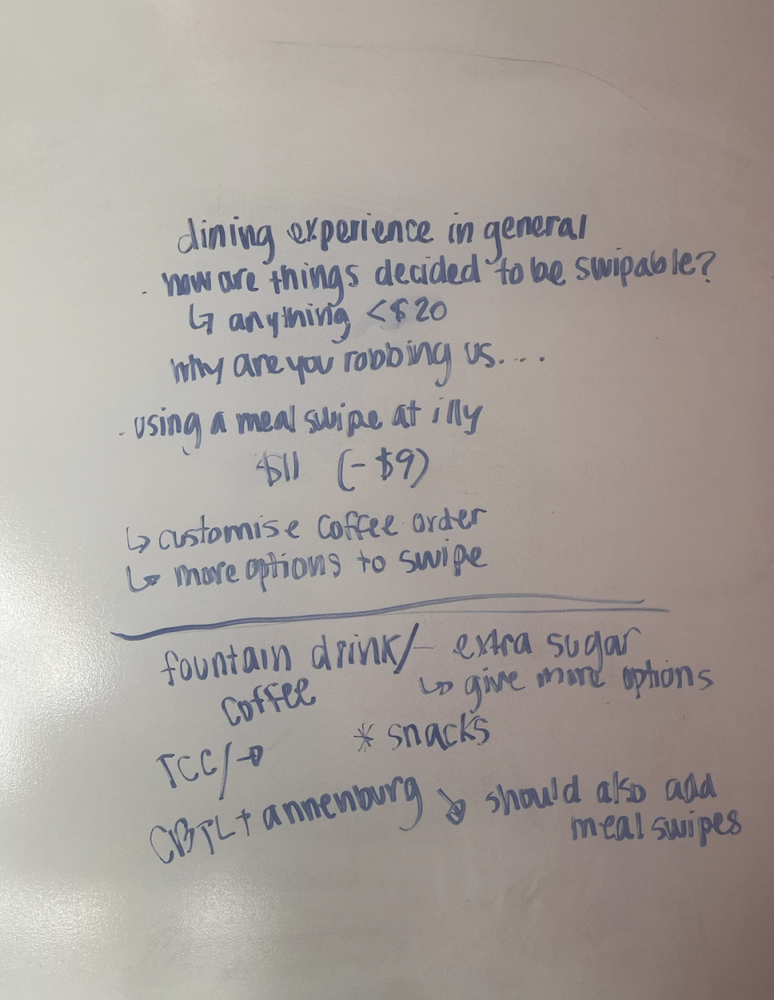
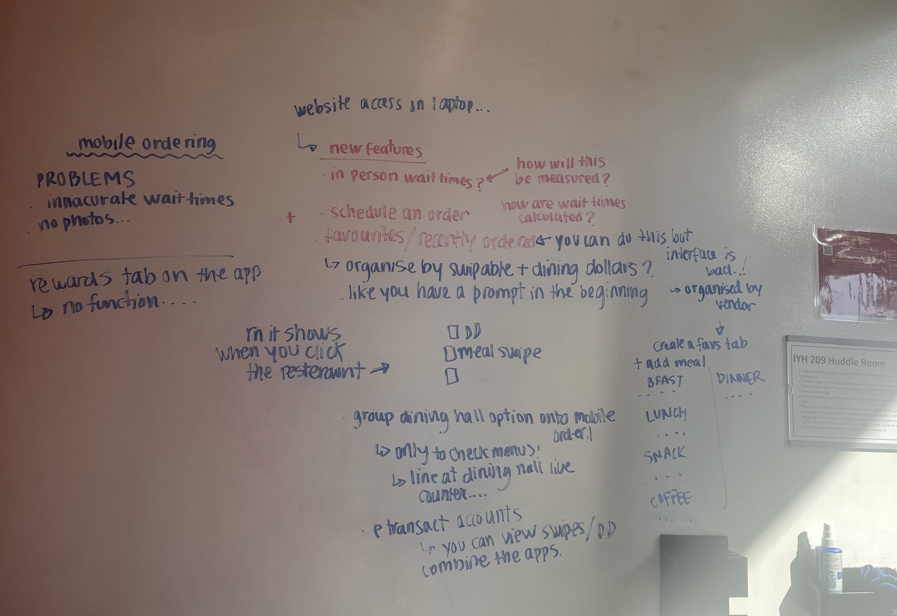
the solution
one app that knows where you are, where you're headed, and what you love.
Troy Eats folds balances, ordering, menus, and community into a single surface — then puts an assistant on top of it that reads your day and removes the choosing.
signature feature
an assistant that plans your day's eating for you.
The home screen learns from your class schedule, your current location, where you have to be next, your order history, and your favourites — then ranks spots by what's closest, open, and uncrowded right now. No more hopping between three apps to decide.
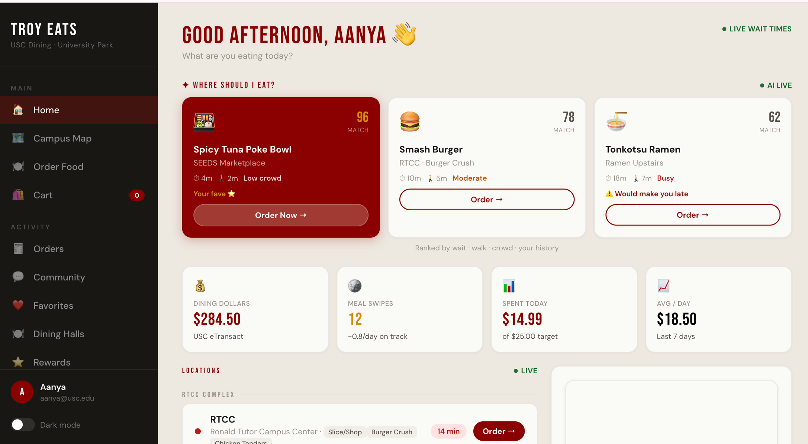
time-aware ordering
"start walking in 2:53" — order timed to your route.
Because it knows your location and the live queue, Troy Eats tells you exactly when to leave so you arrive as your food is ready — and lets you schedule orders around class slots instead of waiting in line.
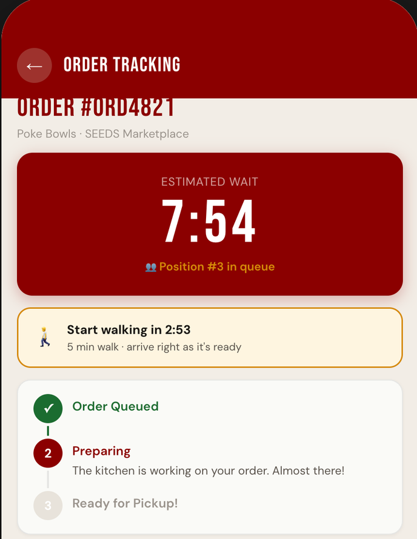
community
a feedback loop between students and chefs.
A community tab lets students post reviews with photos — and chefs reply directly as verified staff. It builds a connection that never existed before, and turns reviews into a living, trusted menu.
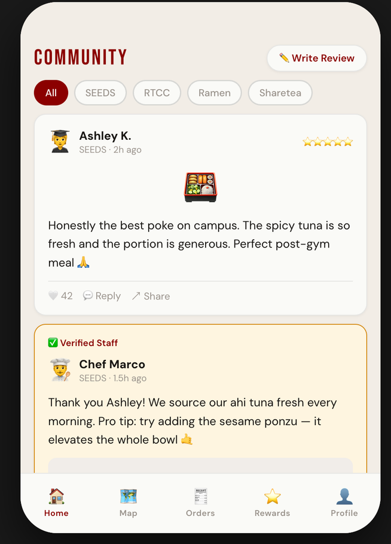
key decision
we turned the dead rewards tab into the engine.
The old rewards page had no function. We rebuilt it into the loop that drives healthier, more affordable habits: points for eating breakfast, for posting photo reviews, for joining school-wide challenges like trying a new dish.
Those points unlock tier status — and higher tiers get priority during rush hours. Engagement, affordability, and crowd-balancing all solved with one mechanic.
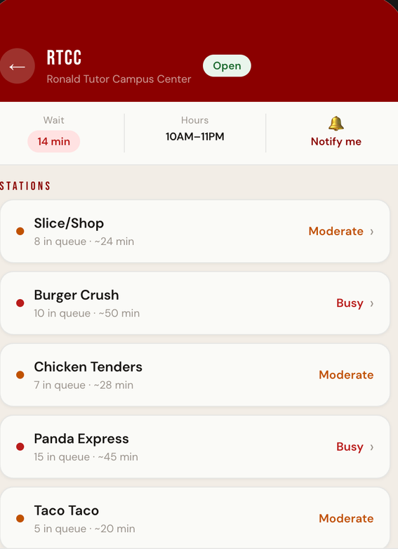
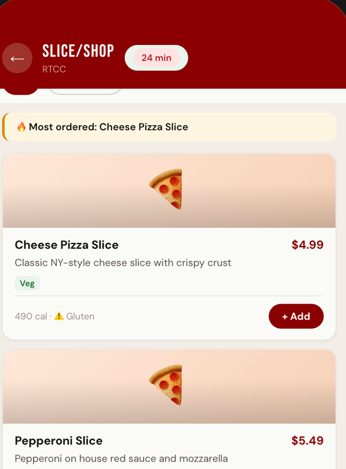
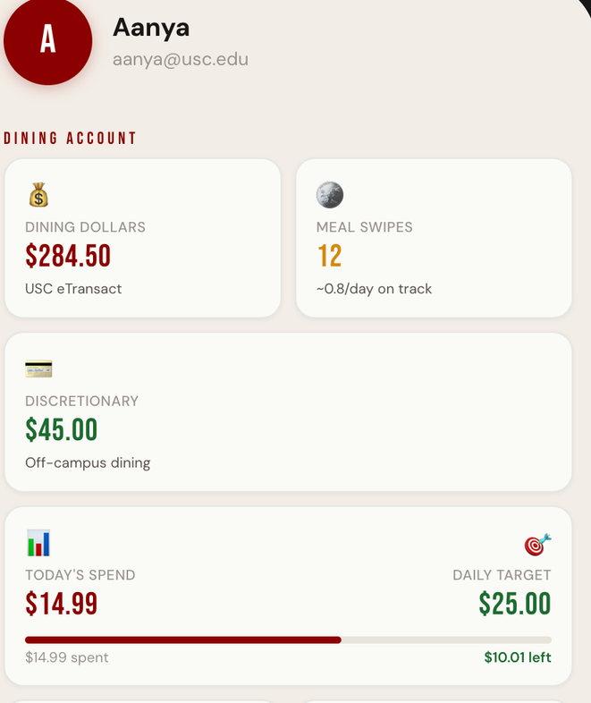
service redesign
nudging toward healthier, cheaper choices.
Beyond the app, we redesigned the service itself: meal-swipe transparency so dining dollars actually last, allergen + dietary filters built into every menu, and small nudges — like swapping a fountain drink for a healthier option, free.
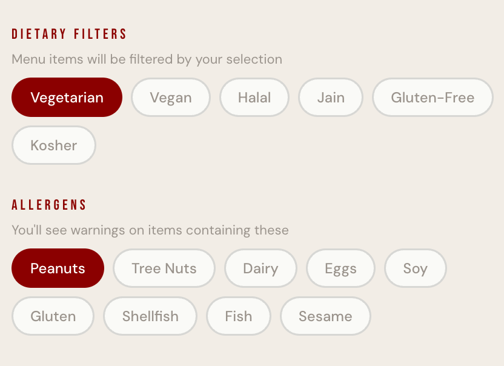
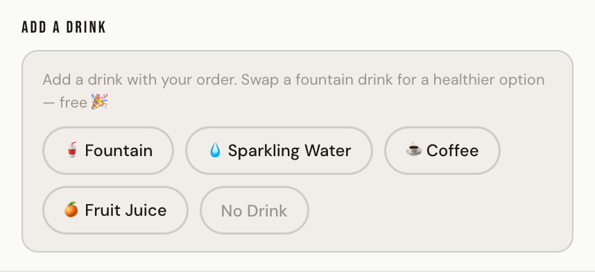
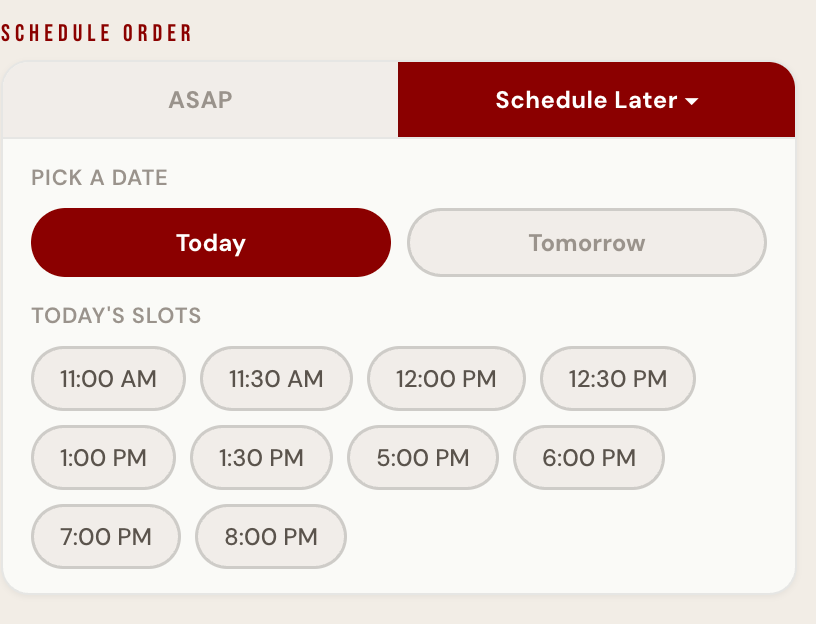
brand
a name and a face the campus already roots for.
We built the full Troy Eats identity — naming, the cardinal-and-gold mark, and a Tommy-Trojan-led campaign — so the product felt like USC, not a generic delivery clone.
campaign hero — troy eats, the trojan way to eat on campus
outcome
The final app and pitch deck combined every fragmented tool into one seamless surface. Reviewers agreed it was well-made and that the features worked together cohesively.
"it combines all the features seamlessly into one platform."
honest reflection — the biggest open risk is the learning curve. consolidating three tools into one powerful app means new patterns to learn; the next iteration would focus on onboarding and progressive disclosure so the power doesn't overwhelm a first-time user.